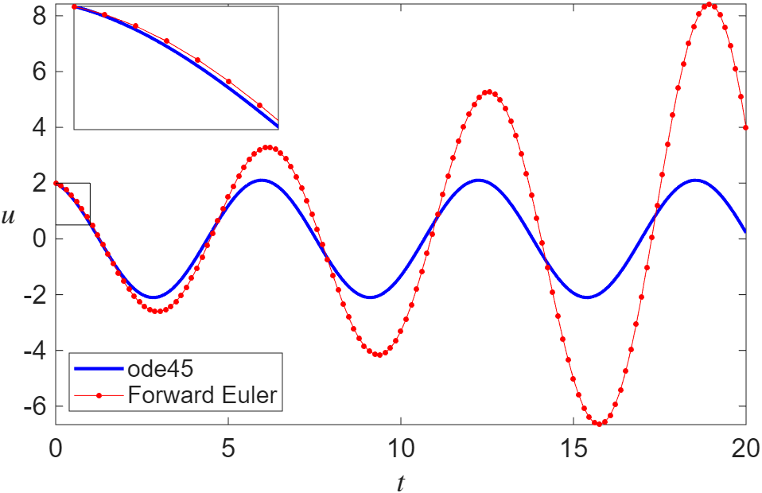
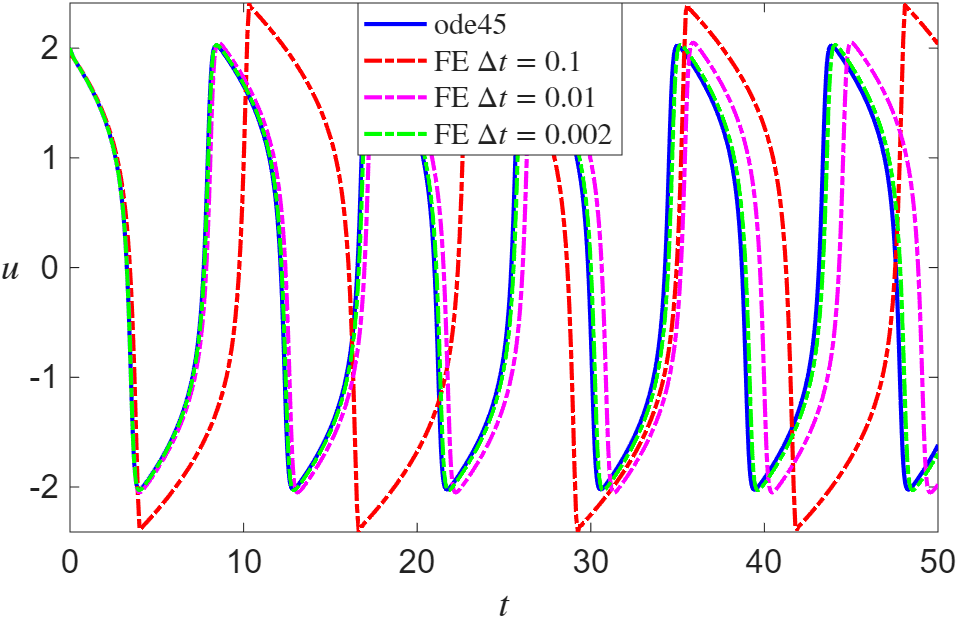
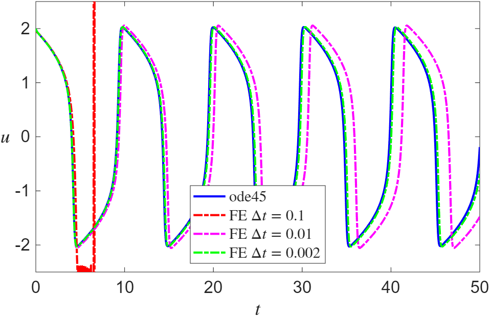
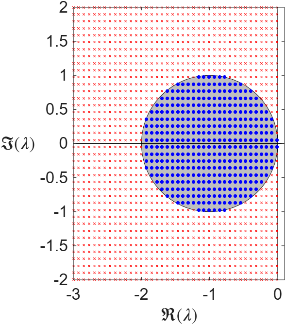

MATH2731 Computational Mathematics II
\[ \dot{\mathbf{u}} = \frac{\mathrm{d}\mathbf{u}}{\mathrm{d}t} = \mathbf{f}(t,\mathbf{u}), \quad \mathbf{u}(t_0)=\mathbf{u}_0 \in \mathbb{R}^n \]
\(u''' = t + 2u + 3u''\), \(\; u(0) = 1\), \(u'(0) = 2\), \(u''(0) = 3\) Let \(y_0 = u\), \(y_1 = u'\), \(y_2 = u''\): \[ \begin{aligned} y_0' &= y_1, & y_0(0) &= 1,\\ y_1' &= y_2, & y_1(0) &= 2,\\ y_2' &= t + 2y_0 + 3y_2, & y_2(0) &= 3. \end{aligned} \]
\[ \frac{d}{dt} \begin{bmatrix} y_0 \\ y_1 \\ y_2 \end{bmatrix} = \begin{bmatrix} 0 & 1 & 0 \\ 0 & 0 & 1 \\ 2 & 0 & 3 \end{bmatrix} \begin{bmatrix} y_0 \\ y_1 \\ y_2 \end{bmatrix} + \begin{bmatrix} 0 \\ 0 \\ t \end{bmatrix} \]
Picard–Lindelöf theorem Let \(\mathcal{D}\subset\mathbb{R}\times\mathbb{R}^n\) be an open rectangle with interior point \((t_0,\mathbf{u}_0)\). Suppose \(\mathbf{f}:\mathcal{D}\to\mathbb{R}^n\) is continuous in \(t\) and Lipschitz continuous in \(\mathbf{u}\) on \(\mathcal{D}\). Then there exists \(\varepsilon>0\) such that the initial-value problem has a unique solution \(\mathbf{u}(t)\) for \(t\in[t_0-\varepsilon,t_0+\varepsilon]\).
Norton’s Dome \[ \frac{\mathrm{d}u}{\mathrm{d}t} = v, \quad \frac{\mathrm{d}v}{\mathrm{d}t} = \sqrt{u}, \quad u(0) = v(0) = 0 \]
As well as \(u(t) = 0\), for any \(T > 0\): \[ u(t) = \begin{cases} 0 & t < T,\\ \frac{1}{144}(t-T)^4 & t \geq T. \end{cases} \]
\(\sqrt{u}\) is not Lipschitz at \(u=0\).
Forward difference for \(\dot{\mathbf{u}}\), with time step \(\Delta t\): \[ \mathbf{u}(t + \Delta t) \approx \mathbf{u}(t) + \Delta t\, \mathbf{f}(\mathbf{u}(t)) \]
With \(\mathbf{u}_n \approx \mathbf{u}(n\Delta t)\): \[ \mathbf{u}_{n+1} = \mathbf{u}_n + \Delta t\, \mathbf{f}(\mathbf{u}_n) \]
\[ \frac{\mathrm{d}^2 u}{\mathrm{d} t^2} - C\left(1-u^2 \right )\frac{\mathrm{d} u}{\mathrm{d} t} + u = 0 \]
\[ \iff \quad \frac{\mathrm{d} u}{\mathrm{d} t} = v, \quad \frac{\mathrm{d}v}{\mathrm{d} t} = C\left(1-u^2\right)v - u \]
ode45C = 0; % Parameter C in the model.
% The ODE rhs function as an "anonymous function".
f = @(t,u) [u(2); -C*(u(1)^2 - 1).*u(2) - u(1)];
U0 = [2; -0.65]; % Initial condition
tspan = linspace(0,20,1e3); % Time span
% Set low tolerances to ensure an accurate solution
options = odeset('RelTol',1e-11,'AbsTol',1e-11);
[~,u_ode45] = ode45(f, tspan, U0);
% Forward Euler setup (timestep, vector of solution points etc)
dt = 0.15; n = round(tspan(end)/dt); u_Euler = NaN(2,n);
u_Euler(:,1) = U0; % Initial condition for Euler method
for i = 1:n-1
t = (i-1) * dt; % Current time (NB: Unused currently!)
u_Euler(:,i+1) = u_Euler(:,i) + dt * f(t, u_Euler(:,i));
end

Substitute the true solution and Taylor expand: \[ \mathbf{u}(t+\Delta t) = \mathbf{u}(t) + \Delta t\, \frac{\mathrm{d}\mathbf{u}}{\mathrm{d}t} + {\cal O}(\Delta t^2) = \mathbf{u}(t) + \Delta t\, \mathbf{f}(\mathbf{u}(t)) + {\cal O}(\Delta t^2) \]
Consistency is not enough for convergence!

\(\Delta t = 0.1\): \(u_{70} \approx 10^{172}\)
\[ \frac{\mathrm{d}u}{\mathrm{d}t} = \lambda u, \qquad \lambda \in \mathbb{C} \]
Stability of forward Euler \[ u_{n+1} = u_n + \Delta t \lambda u_n = (1+\Delta t \lambda)u_n \implies u_n = (1+\Delta t \lambda)^n u_0 \]
Grows without bound if \(|1 + \Delta t \lambda| > 1\). For real \(\lambda\), stability requires \[ -2 < \Delta t \lambda < 0. \]
A consistent but unstable method \[ u_{n+1} = -4u_n + 5u_{n-1} + \Delta t(4\lambda u_n + 2\lambda u_{n-1}) = 4(\Delta t \lambda - 1)u_n + (5 + 2\Delta t \lambda)u_{n-1} \]
Try \(u_n = C\mu^n\): \[ \mu^2 = 4(\Delta t \lambda - 1)\mu + (5 + 2\Delta t \lambda) \implies \mu = 2(\Delta t \lambda - 1) \pm \sqrt{4(\Delta t \lambda)^2 - 6 \Delta t \lambda + 9} \]

\[ \mathbf{u}_{n+1} = \mathbf{u}_n + \Delta t\, \mathbf{f}(\mathbf{u}_{n+1}) \]
Stability of backward Euler \[ u_{n+1} - \Delta t \lambda u_{n+1} = u_n \implies u_{n+1} = \frac{1}{1-\Delta t \lambda}u_n \implies u_n = \left( \frac{1}{1-\Delta t \lambda} \right)^n u_0 \]
If \(\Re(\lambda)<0\) and \(\Delta t > 0\), then \(\Re(1-\Delta t\lambda) > 1\), so \[ \left|\frac{1}{1-\Delta t \lambda}\right| < 1. \] Backward Euler is A-stable.
Lax Equivalence Theorem Assume the conditions of the Picard–Lindelöf theorem. A finite difference method converges (in a suitable sense) to the unique solution of \[ \dot{\mathbf{u}} = \mathbf{f}(t, \mathbf{u}), \quad \mathbf{u}(t_0) = \mathbf{u}_0 \in \mathbb{R}^N, \] as \(\Delta t \to 0\) if the method is both consistent and stable.
Several function evaluations within one step (\(\dot u = f(u)\)): \[ u_{n+1} = u_n + \Delta t \sum_{i=1}^s a_i k_i, \quad k_1 = f(u_n), \quad k_i = f\left(u_n + \Delta t \sum_{j=1}^{i-1} a_{ij} k_j\right) \]
Derivation of RK2 \[ u(t_n+\Delta t) = u(t_n) + \Delta t f(u(t_n)) + \frac{\Delta t^2}{2} f_u(u(t_n)) \dot{u}(t_n) + {\cal O}(\Delta t^3) \]
Evaluate \(f\) at the midpoint: \[ f\big(u(t_n) + \tfrac{\Delta t}{2} f(u(t_n))\big) = f(u(t_n)) + \frac{\Delta t}{2} f_u(u(t_n)) \dot{u}(t_n) + {\cal O}(\Delta t^2) \]
Multiply by \(\Delta t\): matches up to \({\cal O}(\Delta t^2)\), so \[ u_{n+1} = u_n + \Delta t\, f\big(u_n + \tfrac{\Delta t}{2} f(u_n)\big) \] is one order more accurate than forward Euler, for one extra function evaluation.
Use several previous steps instead of several evaluations per step.
Two-step Adams-Bashforth \[ u_{n+2} = u_{n+1} + \frac{\Delta t}{2} \Big( 3 f(u_{n+1}) - f(u_n) \Big) \]